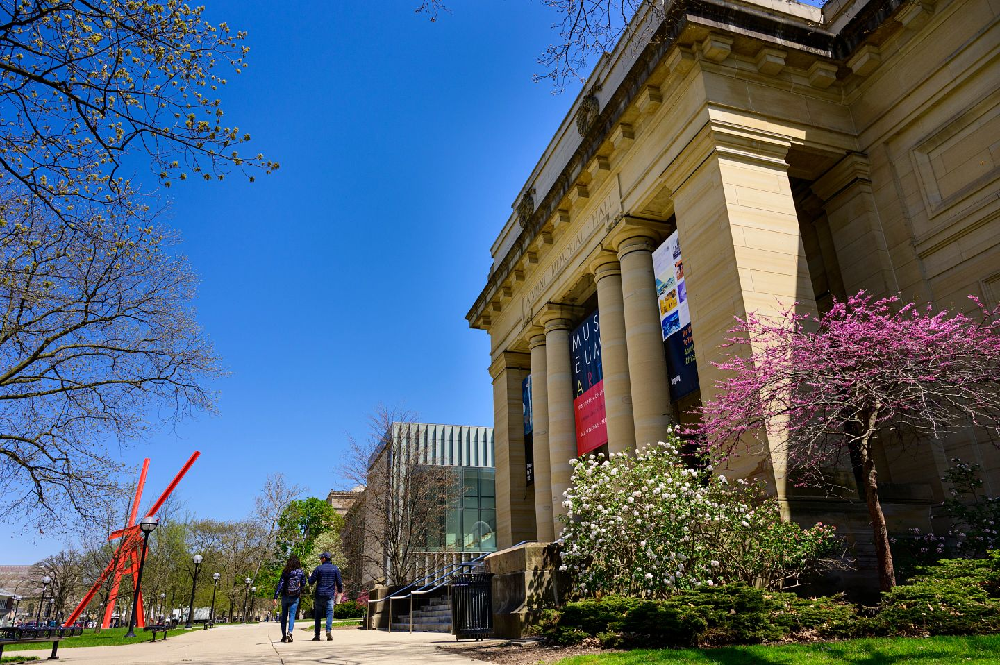
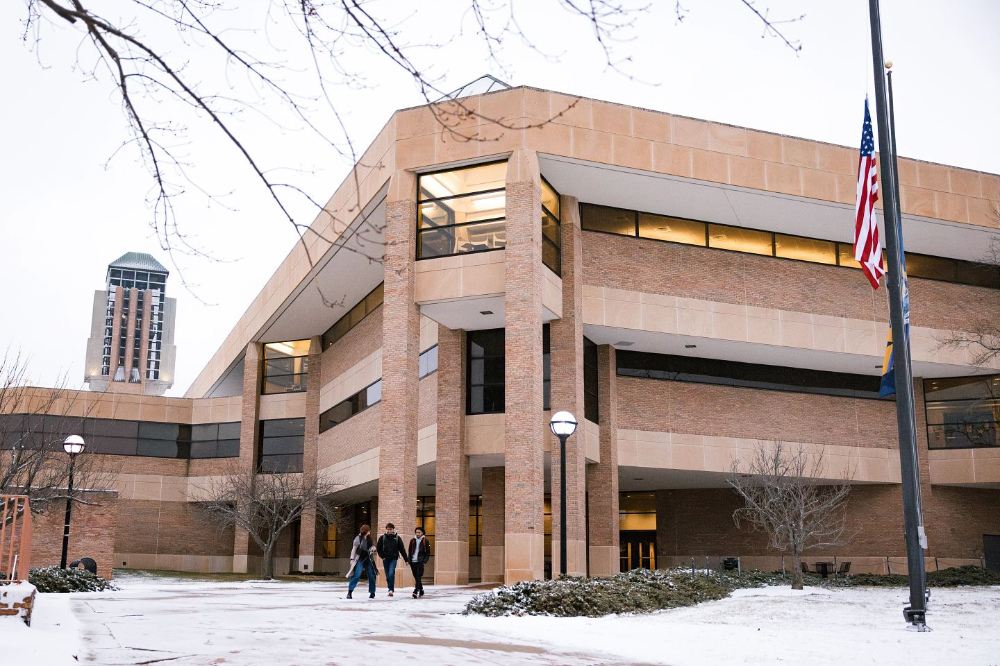

About
UMSI Tutoring and Academic Support offers services to support UMSI students in their coursework with both math and programming peer tutoring. You can book an appointment with our peer tutors on the official website linked here. There are tutors available for all classes and experience levels.

Services for Students with Disabilities
UofM provides many resources for student's with both academic and physical disabilities. These include but are not limited to test accomodations and support services. For more information, visit Services for Students with Disabilities.

Drop-in Academic Success Coaching
Drop-in Academic Success Coaching is a service for students which allows them to meet one-on-one with a Graduate Academic Success Intern to discuss important academic skills such as:
- Adjusting to college life
- How to study
- General time management
Other Resources
- Sweetland Writing Center | Sweetland provides students with help on essays or other writing assignments.
- Math Lab | Math lab provides help with UM math coursework.
- Togetherall | An online anonymous peer support tool for mental health.
- First Year Guide | A guide to help first year students navigate college life.